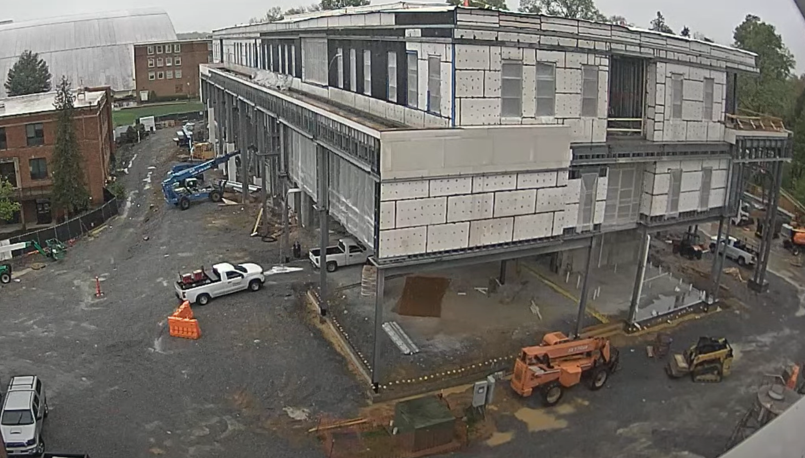

Entry 10.1
The site is clear with a cone near the middle of the driving path and two orange barriers near the building. 11 crew members seemed to be on site. There are 2 crew members on the third floor and 9 crew members on the first floor, operating machines, and on the opposite side of the building. There is a pick up truck carrying what looks like cones or orange tanks. There is a blue boom lift working near the back left of the building on the second floor ceiling. At 11:12 there is a telehandler near the front right of the building carrying a garbage bin to the third floor. It takes the telehandler one minute to lift on to the third floor. A crew member removed the wooden frame which created a gap so that they can load the garbage bin with leftover materials. There are various sized materials and when there's a larger sized board there are two people helping lift and tossing it into the bin. At 11:23, the bin is full and is carried down. The telehandler drives off the camera which takes 3 minutes. When the telehandler proceeds to move off site another telehandler immediately replaces its position. This suggests excellent communication and coordination skills. The cycle time for this process was roughly 14 minutes.
Entry 10.2
The telehandler lifts onto the second floor gap which takes roughly two minutes (11:28). At 11:33 AM the telehandler comes back with an empty garbage bin and remains idle for 2 minutes . At 11:36 the telehandler on the second floor pulls out with what looks to be metal framing and begins to drive away, this takes 3 minutes. Both of the telehandlers turn to their left and drive around each other, swapping positions. The telehandler carrying the metal framing drives towards the back left of the building which takes 2 minutes and the telehandler with the garbage bin raises to the third floor also taking 2 minutes.

Entry 9.3
At 1:28 PM, a compact track loader equipped with a fork attachment transported a pallet of materials to the front right side of the building. After placing the pallet, the operator retracted the fork; however, one of the top boards was unintentionally lifted with the forks. The operator then tilted the attachment to drop the board to the ground. The loader drove off and returned to deliver additional materials at 1:29 PM.
Entry 9.4
At 1:47 PM, a crew member on the first floor was observed taking a phone call, which lasted approximately 12 minutes. At 2:16 PM, another crew member exited the first floor and walked toward the area where the pallet of materials was placed. He briefly stumbled going down, but regained his balance. He then picked up the top board from the pallet and tossed it into the first floor, followed by grabbing a second board and walking around the building to re-enter through a different access point at 2:18 PM. At 2:19 PM, he returned to retrieve the board he had previously thrown over.